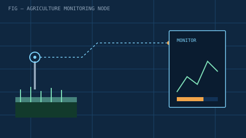

AI-Powered Smart Agriculture Monitoring System
PRJ-01Sensor-based monitoring for agricultural environments, with a full cost analysis using real Nigerian market pricing (Jumia, Konga).
SensorsMonitoringCost Analysis
View details →